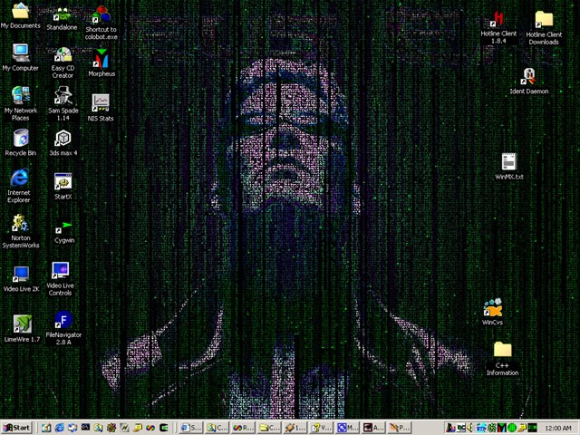

This is the distribution page for ZMatrix. ZMatrix is an animated desktop background which displays streaming characters in a style similar to what was used in the movie 'The Matrix'. The program was based off of source code for a screen saver found at www.elouai.com, and is entirely free. If you have problems with ZMatrix please review the help documentation that comes with the program, or visit the the help documentation online using the 'Help' link on the list to the left of this page. To submit bug reports, feature requests, etc. please use the appropriate sourceforge web interface, as listed below:
| Type of Feedback | Appropriate Web Interface |
|---|---|
| Program crashes, error messages, unexpected behaviour. If you report a bug, please leave some sort of contact information (email or ICQ/MSN/Yahoo messenger handle) with the bug report. If I am unable to reproduce the problem on my own machine, and cannot contact you, I am not likely to be able to fix the bug. | Bug Reports |
| How do I get the program to... Will it work with... | Support Requests |
| Can you get the program to do this... Can you get the program to work with this... | Feature Requests |
| This program ROCKS! This program BLOWS! I wonder what other people are doing with this program. | Discussion Forums |
Any other questions/comments can be directed to: zmatrix_background@hotmail.com.
May 25, 2003
Version 1.5.2 released. Another quick bug-fix release. Mainly done to address the rendering issue showing up in opaque mode. I'm also taking this release as a chance to tidy things up a bit. Removed the upgrade installers. They were too much trouble to maintain, and I had gotten lazy and stopped differentiating them from the full installs anyways.
On a somewhat related note, I got to go see The Matrix Reloaded today. Good film. Got to see a friend's name in the credits, very cool, Sam, you rock.
May 21, 2003
Version 1.5.1 released. This is a quick follow-up release to 1.5.0 to address column spacing problems that were sometimes occurring with the newer Matrix Code Font bundled with 1.5.0. This release uses the older, more dependable font.
May 19, 2003
Version 1.5.0 released. First new release in a long time. Done in time (more or less) for the new Matrix film. This release includes some spiffy new features such as the 'Special String Streams' and the addition of the Winamp Visualization Plugin. Less flashy/notable additions include the new references to the help documentation (online and in the program), and the addition of a dialog to shamelessly plug myself to people in need of a software developer. Many thanks to those who suggested new features and reported bugs.
Also of note in this new release are the updates to the credits/acknowledgments. The original author of the matrix screensaver that this project was based off of contacted me and let me know that his new website is www.elouai.com. The producer of the 'Matrix Code Font' bundled with ZMatrix is now known as e-RBi, you can visit his website at e-rbi.com, or email him at contact@e-rbi.com.
February 3, 2003
Version 1.4.8 released. Quick bug fix to take care of the 'top or left positioned taskbar' problem which was supposed to be fixed before, but wasn't completely.
February 1, 2003
Version 1.4.7 released. The most important change in this version is the addition of Win9x/Me support. I am recommending Win98 or later with IE 5.0 or later installed, but if someone has success running on earlier system specs., post a message in the Discussion Forums and let me, and everyone else know. Also, please note that I'm no longer bundling the MS Gothic font with ZMatrix, but am using a much smaller, Matrix specific font. Much thanks goes to the developer of this font: Realm Beyond iNSANiTY (RBi), see the readme for information on the font.
January 13, 2003
Version 1.4.6 released. More bug fixes and some new features such as different blending modes, and screen saver specific configuration.
January 4, 2003
Version 1.4.5 released. A bugfix release. This one should remove the 'Failed to get RGN for SysListView' error message being reported by some people. This error seems to have been occurring if there were no icons on the desktop.
I'd also like to thank all the people who have reported bugs, and helped in the debugging of the last two versions of ZMatrix.
January 3, 2003
Version 1.4.4 released. Mostly a bugfix release. Continued improvement of the Active Desktop support, and hopefully better XP compatibility. Also, I am now providing an 'Upgrade' installer for people who already have a version of ZMatrix installed... The idea is to reduce the download size for people on dial-up. See the change log/history below for a list of all changes.
On a completely unrelated note: when did so many download sites start to suck so much? CNet/Downloads.com/WhateverTheHellElseTheyWantToCallThemselves won't even let me update my software posting with them unless I pay $79. Tucows now has a seperate login location for us non-subscribed authors, and is constantly trying to convince you to shell out for faster update processing. Now, I thought that these sites were supposed to have a mutually beneficial relationship with software authors... by having our software posted, we bring them page hits, and they in return get us a larger audience for our software. Anyways, I'm ranting... but there is a point: I'd like to give full credit to Major Geeks for being the best download site to deal with.
December 25, 2002 -- Merry Christmas
Version 1.4.3 released. Many bug fixes and new features in this release. This release should work reasonably well with Active Desktop. For a complete list of the changes in this version, see the change log at the bottom of this page. Please let me know of any problems experienced with this version of the program via the sourceforge web interfaces listed at the top of the page. I've also started taking donations of any amount from anyone who enjoys the program, and feels that it's worth something. Also, to help shrink the download size of the program, I'm looking into a web-install, so that un-needed elements (namely, the font used by the program) don't have to be downloaded if they're already on the target machine.
August 29, 2002
Version 1.4.2 released. Version 1.4.1 was accidentally bundled as a debug build. Sorry.
August 28, 2002
Version 1.4.1 released with multiple bug fixes.
Also, just to notify anyone who cares, I'll be leaving on a trip in mid September, and I likely won't be back till early to mid December (a guy wears just one 'FBI Relocation Program' T-Shirt, and they say your cover's blown... geeez). I'm just kidding. I will be away though, so there likely won't be updates for a while, and questions sent to zmatrix_background@hotmail.com will likely not be answered for a while.
August 19, 2002
Version 1.4.0 released with significant changes. Source code is now released under GNU GPL.
August 16, 2002
Project hosting moved to SourceForge.
April 06, 2002
WANTED: DEAD OR ALIVE (preferably dead): One elusive bug. I've had more than one report of people receiving an error message stating "Error, couldn't get RGN for SysListView32". For some people, the message is persistent (every time the program starts or refreshes), for others, it is transient (happens once in a while). I have been unable to reproduce this error message on my machine, although enough people have mentioned it to me to assure me that it exists. What I'd like is for anyone who:
- Has or is willing to get the source for the program (see the Development section below),
- Can compile the main module of the source using MSVC, AND
- Can reproduce the error on their computer
to send me an email (zmatrix_background@hotmail.com), and hopefully take some time to help me track down and get this bug. I've got a suspicion regarding how it can be solved, but since I can't reproduce it on my system, I can't really efficiently try it out and see.
March 21, 2002
By request, I have made the source code for the program publicly available. Use the 'Development' link on the left, or scroll down to the development section for the download. The code is intended primarily as a learning tool, but I have tried to ensure that anyone can use it as they need it. For that reason, it is distributed under a BSD style license. The specifics of the licensing can be found in the README.txt file within the zip. In order to fully compile the code, you will need both Visual Studio (6.0) and Borland C++ Builder (6.0). Hopefully this will not be a problem for too many people. If there are files which I have neglected to include in the source distribution, or if you have comments on/fixes for the code, feel free to email me at zmatrix_background@hotmail.com .
Feb. 06, 2002
Well, I just realized that this little program is being linked to by a few places (even got USA Today's "Pick of the Day" on Feb. 04, 2002). So I guess it's time to add a download counter and add some more 'user friendly' features to the program. Here's what I'm considering doing:
-Improving (read: creating) 'Active Desktop' compatibility. [suggested by Paul V.]
-Investigate functionality on a dual monitor setup. [suggested by Samantha]
-Have the program function as a screensaver as well as a background. [suggested by Robyn T.]
-Port the program to KDE and/or GNOME. [suggested by Paul F.]If there's anything else you think should this program should do (besides walk, talk, and work under Win9x), feel free to send the suggestion to zmatrix_background@hotmail.com .
-Windows 98, Millenium(Me), 2000 or XP
-2.0 Megs of Disk Space
Current version is 1.5.1 [May 21, 2003]
Windows XP and Windows 2000 users:
Download the full version here:
ZMatrix NT SetupWindows 98/Me users:
Download the full version here:
ZMatrix 9x Setup
The following screenshot will give you an idea of how this program will look:

Features include:
- Completely text based rather than using images.
- Has low priority so it will not slow down other operations.
- Does not impede normal desktop operations.
- Free, not share/nag/ad/spy ware.
New in Version 1.1:
- Blends with existing background image.
- Much improved install/uninstall procedure.
- Addition of a system tray icon for interaction/control of the program.
- Configuration window for customizing appearance.
New in Version 1.2:
- Given choice during install to have program added to startup folder.
- Fixed a bug which caused crashes on program exit when the user didn't have administrator privileges.
New in Version 1.2.1:
- Better handling of background image changes while the program is running.
New in Version 1.2.4:
- Better handling of OS shutdown.
New in Version 1.2.5
- Better handling of desktop parameter changes (color, resolution, etc...). [Thanks Logan].
New in Version 1.4.0 (August 19, 2002)
- Added multi-monitor support [thanks to Samantha and others for the suggestion].
- Added screensaver module [thanks Robyn].
New in Version 1.4.1 (August 28, 2002)
- Fixed a bug that surfaced when the program is set as a 'Password protected' screensaver. The program cannot run properly in this mode, it now uses other screensavers rather than displaying an error message.
- Given slightly more graceful behaviour when the program exits while the config dialog is open.
- Fixed a bug that caused the desktop icons to disappear when the windows 'Show Desktop' command is used.
- Modified to add a 'screensaver only' mode where the program is launched as a screensaver, and closes when the screensaver mode is done.
- Reworked the desktop parameter change detection code... hopefully for the better.
New in Version 1.4.2 (August 29, 2002)
- Release build, not debug build.
New in Version 1.4.3 (December 25, 2002)
- HOPEFULLY fixes the "Forced to terminate registry listener thread" error message (Request ID #642185).
- First attempt at Active Desktop support (Request ID #602998).
- Password protected screensaver support (Request ID #651904).
- Detects moved/new desktop icons and attempts not to draw over them (Request ID #599242).
- Allowed process priority to be modified (Request ID #617461).
- Additional configuration options for rendering (Request ID #651891).
- Added methods for sending donations, submitting bug reports, feature requests, etc...
- Other minor bug fixes and feature additions.
New in Version 1.4.4 (January 3, 2003)
- Hopefully fixes the start menu problems in XP (Request ID #659121, #659122, and #659170).
- Attempted improvements in Active Desktop support (invisble desktop icons hopefully no longer a problem).
- Added the ability to change auto-startup options after installation (Request ID #659596).
- Added an upgrade installer for those who already have a version of ZMatrix installed.
- Other minor bug fixes and feature additions.
New in Version 1.4.5 (January 4, 2003)
- Removed the 'Failed to get RGN for SysListView' error message that was occurring if there were no desktop icons (Request ID #659479).
New in Version 1.4.6 (January 13, 2003)
- Gives additional control over the rendering method (Request ID #662342).
- Fixes the font options bug (Request ID #662404).
- Dynamic items no long show through in screen saver mode (Request ID #662973).
- Fixed the 'last column on the right not being draw' problem (Request ID #663346).
- Fixed the 'task bar on left or top causes rendering errors' problem (Request ID #663429).
- Added screen saver specific configuration.
- Added help documentation.
New in Version 1.4.7 (February 1, 2003)
- Fixes the error on screensaver startup problem (Request ID #671755).
- Adds the blend screen saver with background only option (Request ID #673858).
- Adds Win9x/Me compatability (Request ID #651897).
- New (smaller) default font bundled.
- Adds a pause feature.
- Other Minor fixes and feature additions.
New in Version 1.4.8 (February 3, 2003)
- Fixes the 'top or left positioned taskbar' problem.
New in Version 1.5.0 (May 19, 2003)
- Fixes the 'only installs with admin rights' problem (Request ID #660061).
- Attempts to address the Litestep compatibility issue (somewhat) (Request ID #674950).
- Attempts to address the 'randomized cleanup' problem (Request ID #739951).
- Adds the 'winamp visualization plugin' feature (Request ID #720719).
- Adds the 'special string streams' feature (Request ID #724838).
- Other Minor fixes and feature additions.
New in Version 1.5.1 (May 21, 2003)
- Attempts to address the 'font spacing' problem (Request ID #740887).
New in Version 1.5.2 (May 25, 2003)
- Attempts to address the 'opaque rendering mode' problem (Request ID #741607).
The source code for the project is now publicly available under the GNU GPL.
Download the zipped source here: ZMatrixSRC.zip
Visit the SourceForge project homepage.
Browse the SourceForge project CVS.